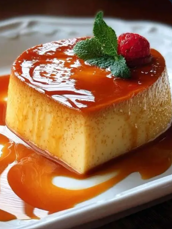
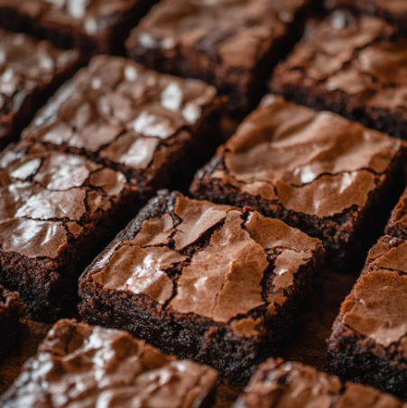
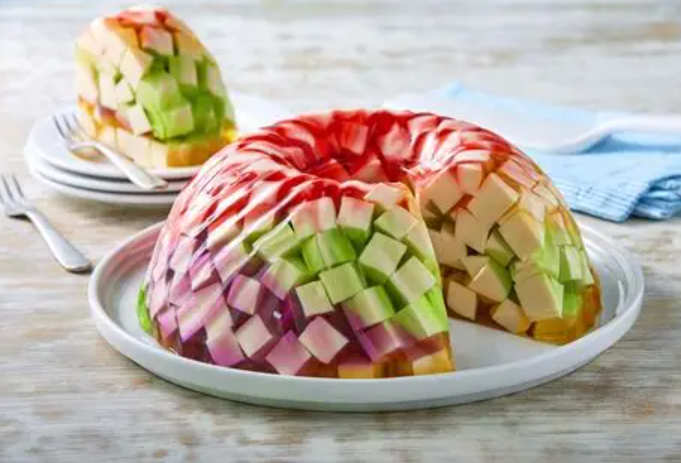
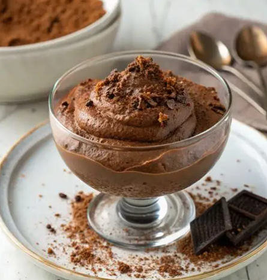

Arroz con Leche
Ingredientes
1 taza arroz
4 tazas leche entera
1 taza agua
1 rama canela
1 taza azúcar
1 cdita extracto de vainilla al gusto
canela en polvo para decorar
Instrucciones
1 Cocer el arroz Hierve el agua con la rama de canela, añade el arroz y
cocina a fuego medio hasta que esté suave.
2 Agregar la leche: Incorpora la leche poco a poco, removiendo constantemente
para que no se pegue.
3 Endulzar: Añade el azúcar y sigue mezclando hasta que se disuelva por completo.
4 Aromatizar: Agrega la vainilla y cocina unos minutos más hasta lograr una
textura cremosa.
5 Servir: Retira la rama de canela, sirve en tazones y espolvorea con canela en polvo.
Flan casero

Ingredientes
1 taza Azúcar para caramelo
1 lata Leche condensada
1 lata Leche evaporada
4 Huevos
1 cdita Esencia de vainilla
Instrucciones
1 Preparar caramelo
Derrite el azúcar en una sartén hasta formar caramelo líquido y viértelo en un molde.
2 Mezclar ingredientes
Licúa la leche condensada, leche evaporada, huevos y vainilla hasta obtener mezcla homogénea.
3 Verter en molde
Coloca la mezcla sobre el caramelo en el molde.
4 Hornear
Hornea a baño maría a 180°C por 50 minutos.
5 Enfriar y desmoldar
Deja enfriar, refrigera y desmolda antes de servir.
Brownies

Ingredientes
200 g de chocolate
100 g de mantequilla
1 taza de azúcar
3 huevos
1 taza de harina
Instrucciones
1- Derrite el chocolate con la mantequilla.
2- Añade el azúcar y mezcla bien.
3- Incorpora los huevos uno por uno.
4- Agrega la harina y mezcla hasta obtener una masa homogénea.
5- Vierte en un molde engrasado y hornea a 180 °C por 25-30 minutos.
6- Deja enfriar y corta en cuadros.
Gelatina de Mosaico

Ingredientes
4 sobres gelatina de sabores
1 lata leche condensada
1 lata leche evaporada
3 cdas grenetina
1/2 taza agua
Instrucciones
1- Preparar gelatinas
Haz las gelatinas de sabores y refrigera hasta que cuajen.
2- Cortar cubos
Corta las gelatinas en cubitos pequeños.
3- Disolver grenetina
Hidrata la grenetina en agua y disuélvela.
4- Mezclar cremas
Combina leche condensada y evaporada con la grenetina.
5- Unir y refrigerar
Agrega los cubos de gelatina, vierte en molde y refrigera 4 horas.
Mousse de Chocolate

Ingredientes
200 g chocolate negro
3 huevos
200 ml crema para batir
2 cdas azúcar
Instrucciones
1 Fundir chocolate
Derrite el chocolate a baño maría.
2 Batir claras
Bate las claras a punto de nieve con azúcar.
3 Mezclar
Agrega el chocolate derretido y la crema batida.
4 Refrigerar
Colocar en vasos y refrigera por 2 horas.